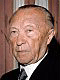

|  | Konrad Adenauer | Christian Democratic Union (CDU) | 15 September 1949 | 15 October 1963 |
| Ludwig Erhard | Independent | 15 October 1963 | 30 November 1966 | |
| Portrait Kurt Georg Kiesinger | Christian Democratic Union (CDU) | 30 November 1966 | 21 October 1969 | |
| Willy Brandt | Social Democratic Party (SPD) | 21 October 1969 | 7 May 1974 | |
| Helmut Schmidt | Social Democratic Party (SPD) | 16 May 1974 | 1 October 1982 | |
| Helmut Kohl | Christian Democratic Union (CDU) | 1 October 1982 | 27 October 1998 | |
| Gerhard Schröder | Social Democratic Party (SPD) | 27 October 1998 | 22 November 2005 | |
| Angela Merkel | Christian Democratic Union (CDU) | 22 November 2005 | 8 December 2021 | |
| Olaf Scholz | Social Democratic Party (SPD) | 8 December 2021 | Incumbent |